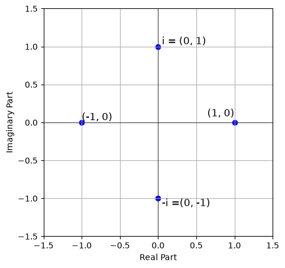
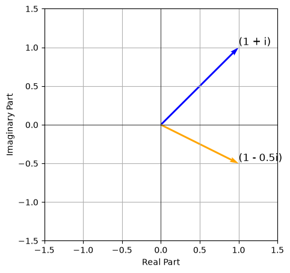

Complex Numbers
In mathematics, a real number is a number that can be used to measure a continuous one-dimensional quantity such as a length, duration or temperature. Real numbers can be thought of as all points on the number line. Real numbers are encountered in everyday life, for instance when measuring time, distance, or temperature.
What then are complex numbers? Well, complex numbers form a number system that extends the real numbers and supports the basic arithmetic operations of addition, subtraction, multiplication, and division. What do we mean by extending the real numbers?
Given the equation $x^2 + 1 = 0$, we realize that there is no real number solution to it. Nevertheless, we can define a new number, which we would denote as $i$, such that $i^2 = -1$. Guess you've seen this before, right? This new number $i$ is called the imaginary unit. Undoubtedly, the imaginary unit is not a real number. I mean, we can't measure it on the number line, can we? But we can use it to define a new number system called the complex numbers.
A complex number is therefore a number of the form $a + bi$, where $a$ and $b$ are real numbers, and $i$ is the imaginary unit. The real part is $a$, and the imaginary part is $b$. The set of all complex numbers is denoted by $\mathbb{C}$. Complex numbers can be represented as ordered pairs of real numbers $(a, b)$ which are the coordinates of a point in the complex plane ($a = \text{Re},z$ and $b = \text{Im},z$). Visually, the complex plane is a two-dimensional plane where the horizontal axis represents the real part of the complex number, and the vertical axis represents the imaginary part.
A simple diagram of a complex plane is shown below. The complex number $z = 1 + 0i$ is represented by the point $(1, 0)$. $z = 0 + 1i$ is represented by the point $(0, 1)$. $z = -1 + 0i$ is represented by the point $(-1, 0)$. $z = 0 - 1i$ is represented by the point $(0, -1)$.

import matplotlib.pyplot as plt
plt.figure(figsize=(5, 5))
plt.xlim(-1.5, 1.5)
plt.ylim(-1.5, 1.5)
plt.axhline(0, color='black', lw=0.5)
plt.axvline(0, color='black', lw=0.5)
plt.scatter([1, 0, -1, 0], [0, 1, 0, -1], color='blue')
plt.text(1, 0.05, '(1, 0)', fontsize=12, ha='right', va='bottom')
plt.text(0.05, 1, 'i = (0, 1)', fontsize=12, ha='left', va='bottom')
plt.text(-1, 0, '(-1, 0)', fontsize=12, ha='left', va='bottom')
plt.text(0.05, -1, '-i =(0, -1)', fontsize=12, ha='left', va='top')
plt.xlabel('Real Part')
plt.ylabel('Imaginary Part')
plt.grid()Basic Algebraic Properties of Complex Numbers
Commutative Property
- $z_1 + z_2 = z_2 + z_1$
- $z_1 \cdot z_2 = z_2 \cdot z_1$
Associative Property
- $z_1 + (z_2 + z_3) = (z_1 + z_2) + z_3$
- $z_1 \cdot (z_2 \cdot z_3) = (z_1 \cdot z_2) \cdot z_3$
Distributive Property
- $z_1 \cdot (z_2 + z_3) = z_1 \cdot z_2 + z_1 \cdot z_3$
Identity Elements
The additive identity is $0 = 0 + 0i$, and the multiplicative identity is $1 = 1 + 0i$. With the additive identity, a complex number $z$ is obtained as it is when $0$ is added to it. With the multiplicative identity, a complex number $z$ is obtained as it is when $1$ is multiplied to it. In other words, we have:
- $z + 0 = z$
- $z \cdot 1 = z$
Inverse Elements
The additive inverse of a complex number $z = a + bi$ is $-z = -a - bi$. The additive inverse is obtained by negating both the real and imaginary parts of the complex number.
For the multiplicative inverse, we first need the conjugate of $z = a + bi$, which is $\bar{z} = a - bi$. Multiplying a complex number by its conjugate gives a real number:
$$z \bar{z} = (a + bi)(a - bi) = a^2 + b^2$$
which is the square of the modulus of $z$ (defined below). So for $z \neq 0$, the multiplicative inverse is the conjugate divided by the square of the modulus:
$$\frac{1}{z} = \frac{\bar{z}}{a^2 + b^2} = \frac{a - bi}{a^2 + b^2}$$
In other words,
- $z + (-z) = 0$
- $z \cdot \frac{1}{z} = 1$ (for $z \neq 0$)
Vectors and Modulus of Complex Numbers
If we can represent a complex number as an ordered pair of real numbers, then we can also represent it as a vector in the complex plane. Isn't that right? The modulus or absolute value of a complex number $z = a + bi$ is denoted by $|z|$ and is defined as the distance from the origin to the point $(a, b)$ in the complex plane. What use would this be? You see, one reason for the use of complex numbers in certain areas of engineering and physics is its ability to represent oscillations and waves (which we would get to in subsequent sections). The modulus of a complex number can therefore be used to represent the amplitude of an oscillation, which becomes useful in areas like signal processing and control systems.

import numpy as np
import matplotlib.pyplot as plt
plt.figure(figsize=(5, 5))
plt.xlim(-1.5, 1.5)
plt.ylim(-1.5, 1.5)
plt.quiver(0, 0, 1, 1, angles='xy', scale_units='xy', scale=1, color='blue')
plt.quiver(0, 0, 1, -0.5, angles='xy', scale_units='xy', scale=1, color='orange')
plt.text(1, 1, '(1 + i)', fontsize=12, ha='left', va='bottom')
plt.text(1, -0.5, '(1 - 0.5i)', fontsize=12, ha='left', va='bottom')
plt.xlabel('Real Part')
plt.ylabel('Imaginary Part')
plt.axhline(0, color='black', lw=0.5)
plt.axvline(0, color='black', lw=0.5)
plt.grid()The modulus of a complex number $z = a + bi$ is given by the formula:
$$|z| = \sqrt{a^2 + b^2}$$
Hence $|z|^2 = (\text{Re},z)^2 + (\text{Im},z)^2$. From this formula, we can see that the modulus of a complex number is always non-negative. It's equal to zero if and only if the complex number is zero. Also, $|\text{Re},z| \le |z|$ and $|\text{Im},z| \le |z|$. This shows that the modulus is always greater than or equal to the absolute value of the real and imaginary parts of the complex number. Why? Because $|z|^2$ is a sum of two non-negative squares, so dropping one of them can only make it smaller. When given two complex numbers $z_1$ and $z_2$ separated by a distance, the modulus of their difference $|z_1 - z_2|$ represents the distance between the two points.